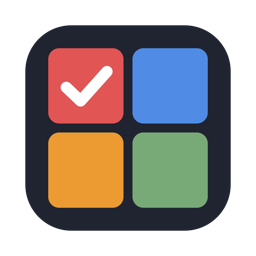
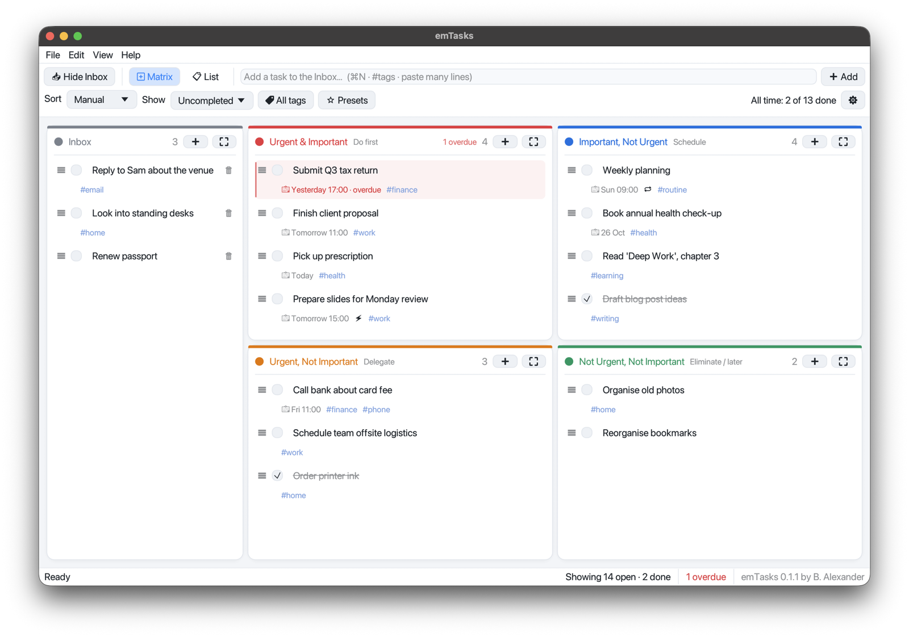

emTasks
A quiet to-do app for Mac that sorts your tasks by what's urgent and what's important.
Download for MacFree · Offline · No account · macOS 11+ on Apple Silicon · Install help


A quiet to-do app for Mac that sorts your tasks by what's urgent and what's important.
Download for MacFree · Offline · No account · macOS 11+ on Apple Silicon · Install help
